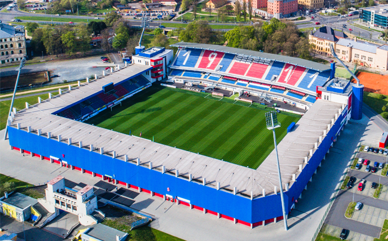

Centro de la ciudad de Pilsen
Centro de la ciudad de PilsenPilsen se ha hecho famosa sobre todo por la fabricación de la cerveza; la marca Pilsner Urquell (Plzeňský Prazdroj) dio el nombre al tipo de cerveza pilsener, hoy difundido en el mundo entero. En Pilsen fueron fundadas asimismo las primeras fábricas de la famosa empresa de maquinaria Škoda Works, siendo actualmente la sede de Škoda Transportation donde se producen medios de transporte urbanos y ferroviarios.
Estadio de fútbol FC Viktoria Pilsen
En los últimos años, Pilsen es conocida también gracias a su club de fútbol FC Viktoria Plzeň, que logra imponerse incluso en la escena europea.